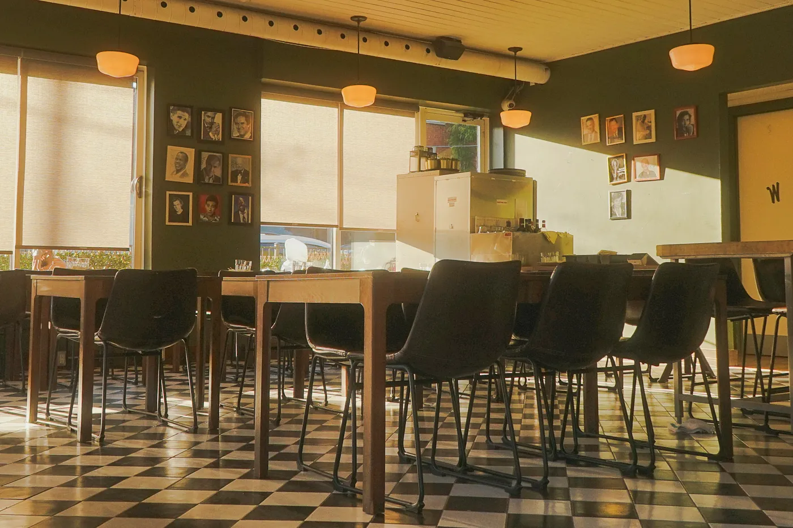
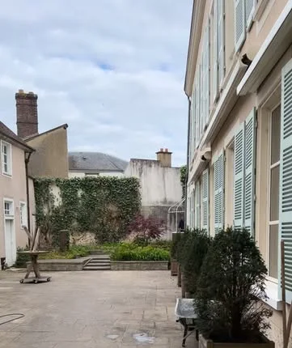
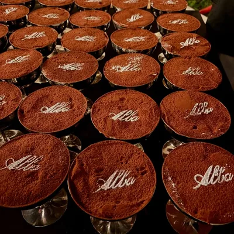
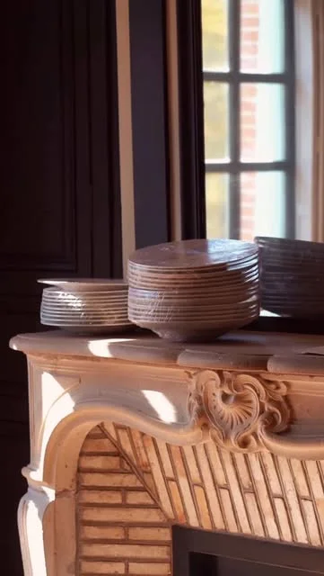

Orecchiette
alle cime di rapa
La recette emblématique des Pouilles : brocoli-rave, anchois, ail, piment, chapelure dorée.

La cuisine des Pouilles,
au pied de la cathédrale.
01La maison
Alba, c'est l'aube en italien. Une maison du XVe siècle   
02Les incontournables
01 / 05
La recette emblématique des Pouilles : brocoli-rave, anchois, ail, piment, chapelure dorée.
Crémeuse à cœur, tomates de saison, basilic et focaccia tiède.
Le premier dessert sorti de la cuisine, en avant-première sur Instagram.
Tomates cerises, olives, origan. Pour l'aperitivo dans la cour.
Côte de veau panée, roquette, tomates cerises, citron.
03Cucina italiana
Carte d'ouverture en préparation avec le chef Antonio Boccale. Plats et prix ci-dessous donnés à titre d'exemple.
Prix nets en euros, service compris. Allergènes donnés à titre indicatif : demandez à notre équipe, elle vous renseignera avec plaisir.
04Al bicchiere o in bottiglia
Primitivo, Negroamaro et Fiano du Salento pour suivre le chef dans les Pouilles, quelques grandes bouteilles de Toscane et du Piémont, et l'heure du spritz dans la cour.
05Dentro Alba
06Notre histoire
L'hôtel de Champrond, le président avare qui aurait inspiré Harpagon à Molière, et la famille Bleu Collection qui lui écrit un nouveau chapitre.
Lire notre histoire→07Ils ont hâte
3 262
personnes suivent déjà l'ouverture d'Alba sur Instagram.
Après l'ouverture, la note et les derniers avis Google s'afficheront ici automatiquement.
08Questions fréquentes
Alba est au 26 place Jean-Moulin, 28000 Chartres, dans l'hôtel de Champrond, au pied de la cathédrale et à 5 minutes à pied de la gare.
Une cuisine italienne généreuse, inspirée des Pouilles, région d'origine du chef Antonio Boccale : pâtes fraîches maison, burrata, antipasti, secondi et tiramisù, avec des vins italiens et des spritz.
L'ouverture est prévue à l'automne 2026. Les dernières nouvelles sont publiées sur le compte Instagram @alba_chartres.
La réservation en ligne ouvrira avec le restaurant. Pour les repas de famille, anniversaires et entreprises, écrivez à contact@cafebleu-chartres.com.
09Nous trouver
28000 Chartres
Horaires indicatifs · ouverture à l'automne 2026